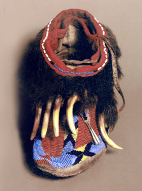
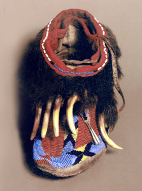

ANTHROPOLOGY CLUB
Although it has a faculty advisor, the Anthropology Club is a student-run organization providing a diversity of activities revolving around various anthropological activities. The club has sponsored vists to the Longhouse at the Kahnawake Tribal Territory to learn about traditional Mohawk life, various field trips, guest speakers and film showings. They have also given papers and symposia at conferences such as the Northeastern Anthropological Association meetings held every spring. Students from the club are also active in the Fleming Museum's Family Days where they construct Egyptian pyramids and Polynesian war canoes out of cardboard, make African dolls out of clay and tell stories of ancient times.
If you have any questions, please contact club president Brennan Gauthier.
THE JAMES B. PETERSEN MEMORIAL GALLERY OF NATIVE AMERICAN CULTURES
Fleming Museum
(permanent exhibit)
The Robert Hull Fleming Museum is pleased to announce the opening of the James B. Petersen Memorial Gallery of Native American Cultures. This newly-installed, long-term exhibition explores the material cultures and artistic traditions of indigenous peoples of North America through art and artifacts from the Museum's collections. Drawing upon the unique breadth and strengths of the Fleming's collections, the exhibition features outstanding examples of Navajo textiles, Plains quillwork and beadwork, carvings from the northwest coast, pottery from the southwest, baskets from California and New England, and lithics from Vermont, among others. Highlights include a stunning Chilkat blanket, examples of both historical and contemporary Abenaki baskets, and the "Colchester Jar," which dates back to ca. 1500 and was unearthed in Colchester in the 1820s. Through objects that date from pre-contact to the present, the installation explores a number of themes, including the continuity of cultural traditions, innovation resulting from exchange between Native American cultural groups, and the impact of contact with peoples of European descent. Moreover, the gallery highlights diverse views and approaches by displaying texts by Native Americans from both local and national tribes alongside those by Museum staff and University of Vermont faculty.
The late James B. Petersen, professor of anthropology at the University of Vermont, was a guiding force behind this installation. This gallery is dedicated to Jim, who selflessly shared his scholarly expertise and his passionate commitment toward the goal of understanding and celebrating the art of the original Americans.
|
 |
Colchester Jar |
Grizzly Bear Moccasins |
Chilkat Blanket |